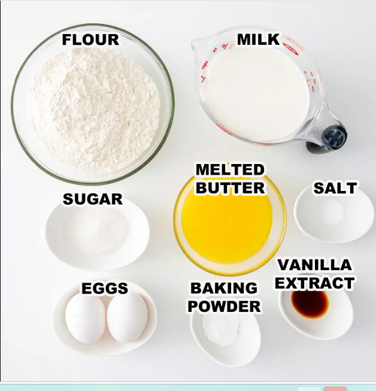

Recipes
Now lets teach you how to actually make these waffles for yourself
Ingredients
- 1 3/4 cups of all purpose floower
- 1 tablespoon of sugar
- 1 tablespoon of baking powder
- 1/2 teaspoon of salt
- 2 large eggs
- 1 3/4 cups of milk
- 1/2 cups of melted butter
- 1 teasspoon of vanilla extract
- 1/2 teaspoon of cinnamon
Okay! you love image

Instructions
- Preheat your waffle iron according to the manufacturer's instructions.
- In a large mixing bowl, whisk together the flour, sugar, baking powder, salt, and cinnamon.
- In another bowl, beat the eggs and then add the milk, melted butter, and vanilla extract. Mix well.
- Pour the wet ingredients into the dry ingredients and stir until just combined. Be careful not to overmix; a few lumps are okay.
- Lightly grease the preheated waffle iron with cooking spray or a small amount of melted butter.
- Pour an appropriate amount of batter onto the center of the waffle iron (usually about 1/2 to 3/4 cup, depending on your waffle iron size).
- Close the waffle iron and cook according to the manufacturer's instructions until the waffles are golden brown and crisp.
- Carefully remove the waffles from the iron and serve immediately with your favorite toppings such as syrup, fresh fruit, whipped cream, or butter.